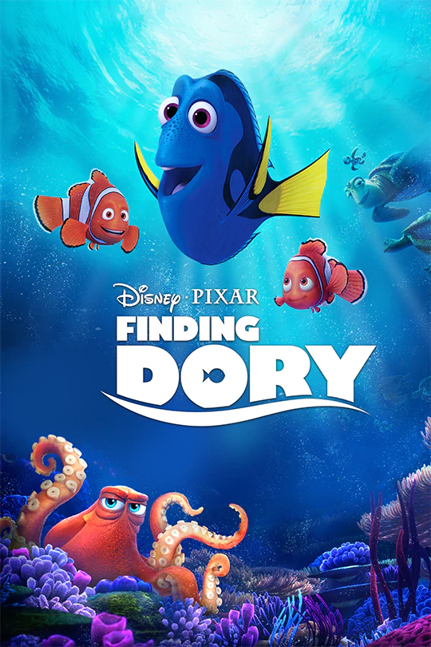
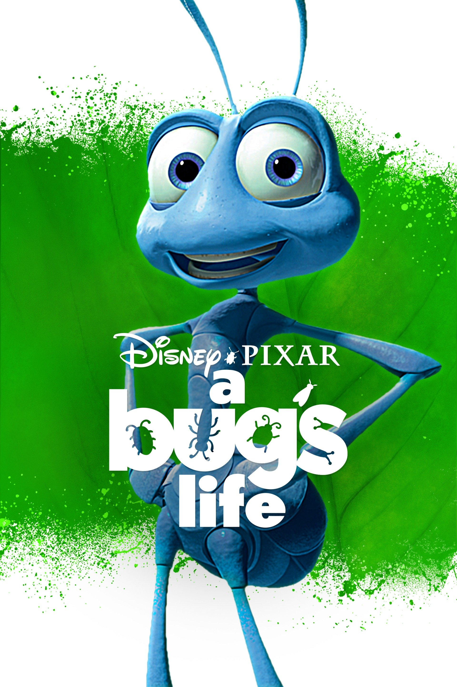

Finding Nemo
A Clown fish,Overly cautions with his son,Nemo who has a foreshortened fin.When Nemo swims too close to the surface to prove himself,he is caught by a driver, and horified marlin and complicants the encounters with sharks, jellyfish,and a host of ocean dangers.Meanwhile,nemo plots his escape from a dentist's fish tank.
Similar Movies
 